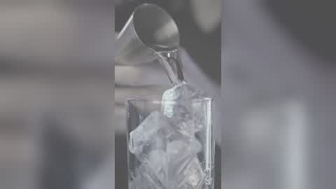
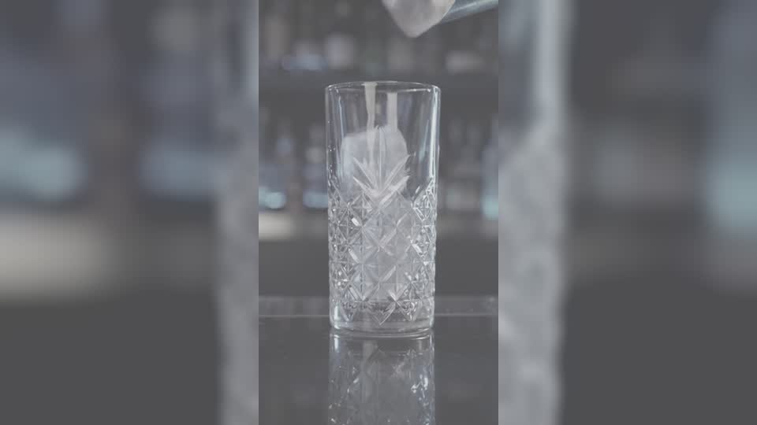

Dall’idea
al video
Dritto sul tuo
profilo
9:41
jueclubmontecatini
4748post
2.100follower
312seguiti
Jué ClubCocktail bar · Bistrot · DJ set · Montecatini
ModificaCondividi profilo
versaghiacciolimetitolo


Aperitivoal Jué
01 · Bozza
02 · Riprese
03 · Montaggio